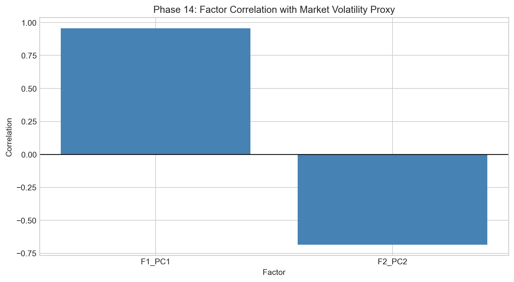
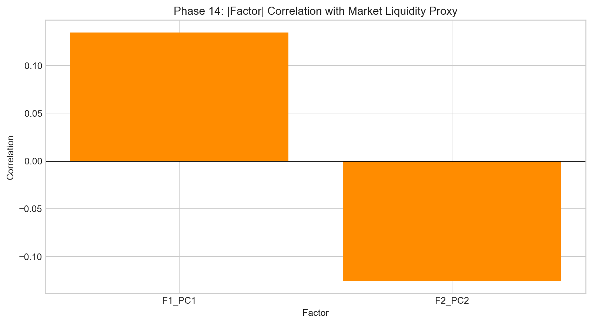
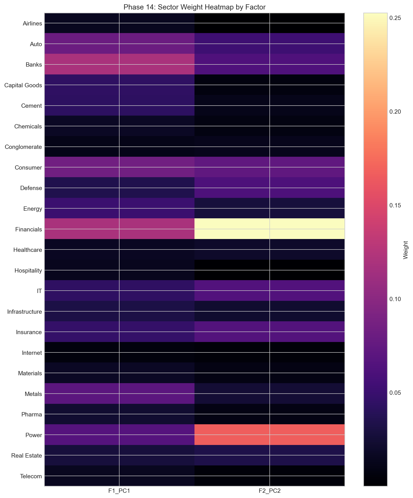
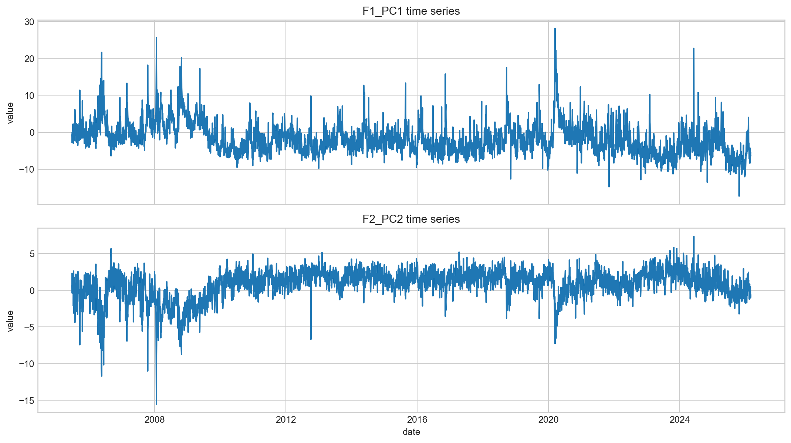
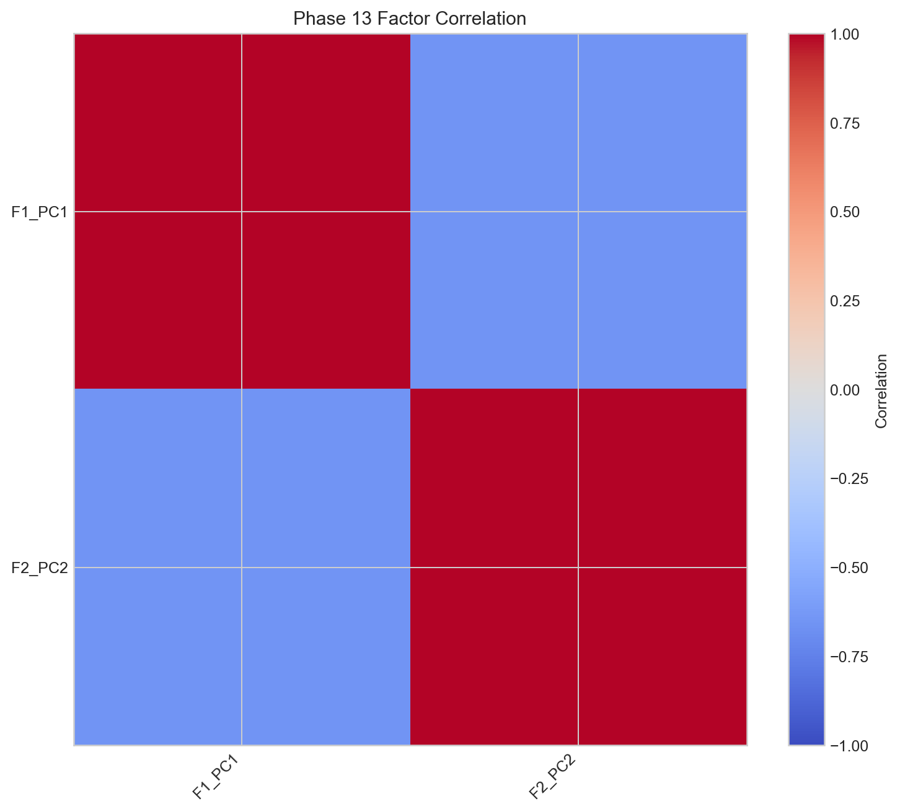

Factor Interpretation
This post asks a simple question: what do retained factors mean in market terms?
Interpretation is kept conservative. A factor is treated as meaningful only when three signals agree: loading concentration pattern, time-series behavior, and correlation with market-relevant proxies. If one leg fails, the factor is classified as conditional rather than structural.
Across phases, the dominant pattern is a stable first mode acting as systemic volatility backbone. The second mode remains useful but rotates more strongly and behaves less like a permanent anchor. That distinction appears repeatedly in concentration, overlap, and split diagnostics.
The figure block below is arranged from broad interpretation signal (legacy) to detailed phase-14 diagnostics.






Main takeaway
PC1 is treated as structural; PC2 is treated as conditional. This framing prevents over-claiming while still preserving useful information from secondary dynamics.
The phase-13 charts below provide the time-path context for that interpretation.


Shared reference
Dictionary: same terminology map used across all pages.